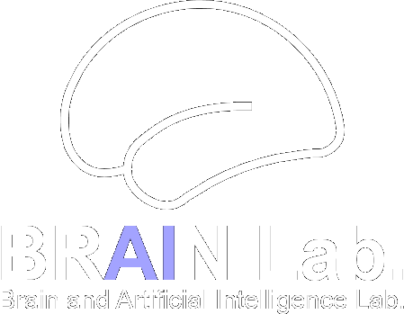
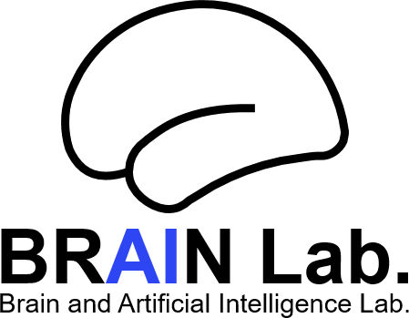

Publications
논문 & 학술 발표
뇌-컴퓨터 인터페이스, 신경 신호 디코딩, 기계학습에 관한 국제·국내 저널 논문과 학회 발표입니다. Scientific Data(IF 9.8), Journal of Neural Engineering, PLOS ONE 등에 게재되었습니다.


뇌-컴퓨터 인터페이스, 신경 신호 디코딩, 기계학습에 관한 국제·국내 저널 논문과 학회 발표입니다. Scientific Data(IF 9.8), Journal of Neural Engineering, PLOS ONE 등에 게재되었습니다.